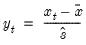

@stdize Standardized data (using sample standard deviation). Return copy of data scaled and translated to have a mean of zero and a Pearson product moment sample standard deviation of one. Syntax: @stdize(x, [s]) x: series, vector, matrix s: (optional) sample string or object when x is a series and assigning to a series Return: series, vector, matrix object The adjusted data are calculated as  where and are the mean and sample standard deviation, respectively, of . For series calculations, EViews will use the current or specified workfile sample. Examples show @stdize(x) returns a linked series of the standardized values of x. Consider the commands matrix m = @mrnd(100,100) @mean(m) @varp(m) matrix stdm = @stdizep(m) @mean(stdm) @varp(stdm) The matrix M should have mean approximately 0.5 and population variance approximately 0.083. The standardized matrix, STDM, should have mean approximately 0 and population variance of 1. Cross-references See also @stdizep, @colstdize and @colstdizep.


 and are the mean and sample standard deviation, respectively, of
and are the mean and sample standard deviation, respectively, of  .
.